Configuración General Módulo de Finanzas

El usuario selecciona el módulo de Finanzas en el menú lateral de los módulos del sistema, ahí visualizara las opciones Configuración, Gestión de Pagos y Bancos, debiendo pulsar Configuración
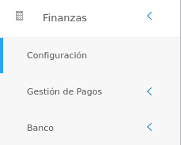
Registros comunes
La sección de registros comunes es una herramienta de la Configuración del Módulo de Finanzas que permite al administrador o un usuario con permisos especiales sobre el módulo de Finanzas, ajustar el módulo a la organización usuaria a través de parámetros configurables. Los datos registrados en esta sección serán considerados en todas las funcionalidades del módulo.
El usuario ingresará a Registros Comunes, visualizando 6 iconos Bancos, Agencias Bancarias, Tipos de cuenta, Cuentas Bancarias, Formas de pago y Archivos de conciliación.
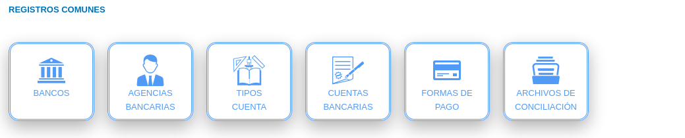
Bancos
A través de esta sección se gestionan los diferentes registros de entidades bancarias. El sistema KAVAC incorpora por defecto una serie de entidades bancarias registradas en Venezuela.
El usuario selecciona el icono de Bancos
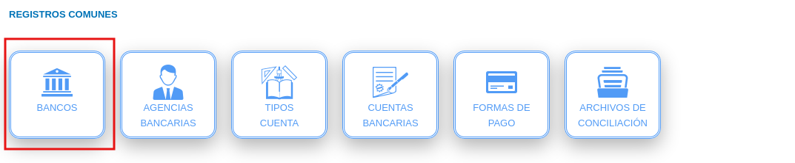
Registro de bancos
- Complete el formulario Bancos (ver Figura 5). Asigne un logo, un código, nombre abreviado, nombre y sitio web para el banco a través de los campos Logotipo, Código, Nombre aberviado, Nombre y Sitio web
- Presione el botón
 Guardar para registrar los cambios efectuados.
Guardar para registrar los cambios efectuados. - Presione el botón
 Cancelar para limpiar datos del formulario.
Cancelar para limpiar datos del formulario. - Presione el botón
 Cerrar para cerrar el formulario.
Cerrar para cerrar el formulario.
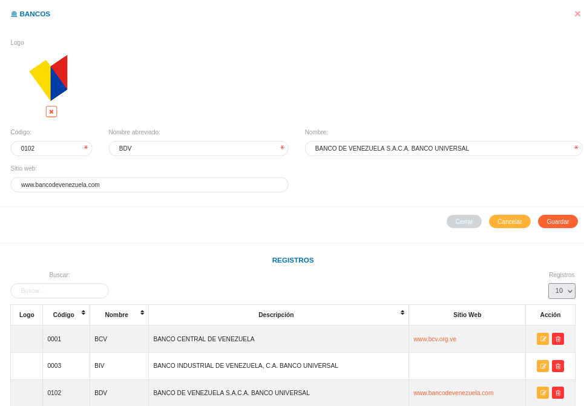
Gestión de registros de bancos
- Para editar un registro de Bancos presione el botón Editar
 del registro seleccionado de la tabla Registros. A continuación complete el formulario Bancos y presione el botón Guardar para almacenar los cambios efectuados.
del registro seleccionado de la tabla Registros. A continuación complete el formulario Bancos y presione el botón Guardar para almacenar los cambios efectuados. - Para eliminar un registro de Bancos presione el botón Eliminar
 del registro seleccionado de la tabla Registros.
del registro seleccionado de la tabla Registros.
Agencias bancarias
A través de esta sección se gestionan agencias bancarias asociadas a una entidad bancaria previamente registrada.
El usuario selecciona el icono de Agencias Bancarias
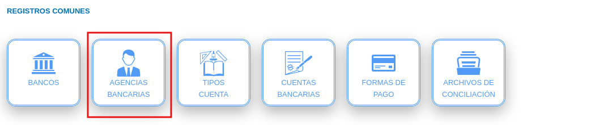
Registro de Agencias Bancarias
- Complete el formulario Agencias Bancarias (ver Figura 6).
Números Telefónicos
Presionar el botón Agregar números telefónicos para añadir un nuevo registro de contacto.
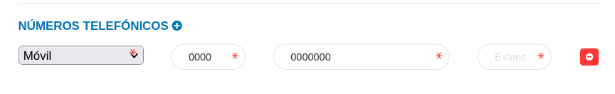
Para agregar registros comunes del sistema acceda a Configuración > General > Registros Comunes.

- País: Para crear un nuevo registro de país acceda a Configuración > General > Registros Comunes > Países.
- Estado: Para crear un nuevo registro de estado acceda a Configuración > General > Registros Comunes > Estados.
-
Ciudad: Para crear un nuevo registro de ciudad acceda a Configuración > General > Registros Comunes > Ciudades.
-
Presione el botón
Guardar para registrar los cambios efectuados. - Presione el botón Cancelar para limpiar datos del formulario.
- Presione el botón Cerrar para cerrar el formulario.
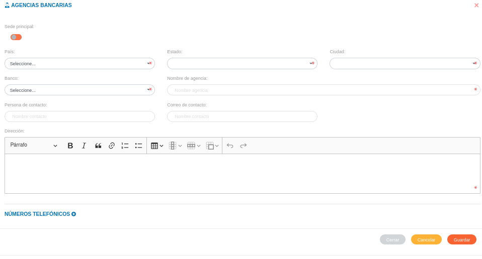
Gestión de registros de agencias bancarias
- Para editar un registro de Agencias Bancarias presione el botón Editar del registro seleccionado de la tabla Registros. A continuación complete el formulario Bancos y presione el botón Guardar para almacenar los cambios efectuados.
- Para eliminar un registro de Agencias Bancarias presione el botón Eliminar del registro seleccionado de la tabla Registros.
Tipos de cuenta
A través de esta sección se gestionan los diferentes tipos de cuentas que administra la organización usuaria.
El usuario selecciona el icono de Tipo de cuentas
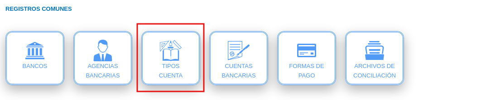
Registro de Tipo de cuentas
- Complete el formulario Tipo de cuentas (ver Figura 7). Asigne un nombre para el tipo de cuenta a través del campo Nombre.
- Presione el botón Guardar para registrar los cambios efectuados.
- Presione el botón Cancelar para limpiar datos del formulario.
- Presione el botón Cerrar para cerrar el formulario.
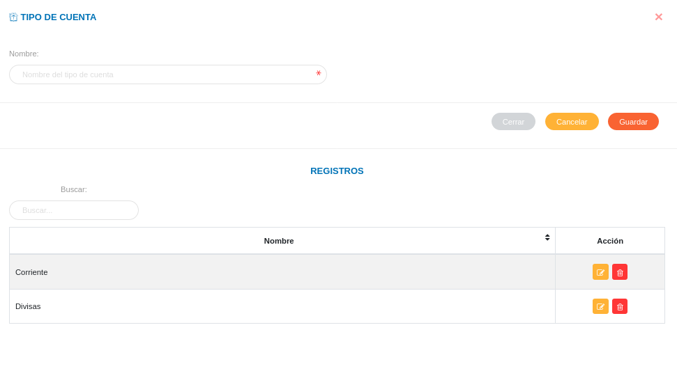
Gestión de registros de tipos de cuentas
- Para editar un registro de Tipo de cuentas presione el botón Editar del registro seleccionado de la tabla Registros. A continuación complete el formulario Bancos y presione el botón Guardar para almacenar los cambios efectuados.
- Para eliminar un registro de Tipo de cuentas presione el botón Eliminar del registro seleccionado de la tabla Registros.
Cuentas bancarias
A través de esta sección se gestionan cuentas bancarias que administra la organización usuaria.
El usuario selecciona el icono de Cuentas bancarias
Registro de Cuentas bancarias
- Complete el formulario Cuentas bancarias (ver Figura 8).
Para agregar registros comunes del módulo de Finanzas acceda a Finanzas > Configuración > Registros Comunes.
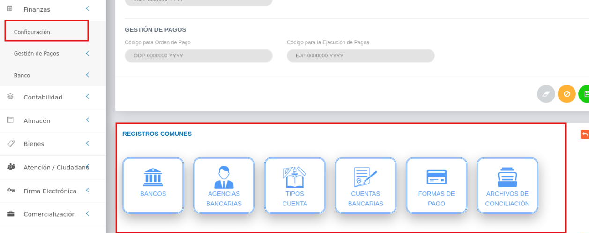
- Banco: Para crear un nuevo registro de banco acceda a Finanzas > Configuración > Registros Comunes > Bancos.
- Agencia Bancaria: Para crear un nuevo registro de agencias bancarias acceda a Finanzas > Configuración > Registros Comunes > Agencia Bancaria.
-
Tipo de cuenta: Para crear un nuevo registro de tipo de cuentas acceda a Finanzas > Configuración > Registros Comunes > Tipo de cuenta.
-
Presione el botón
Guardar para registrar los cambios efectuados. - Presione el botón Cancelar para limpiar datos del formulario.
- Presione el botón Cerrar para cerrar el formulario.
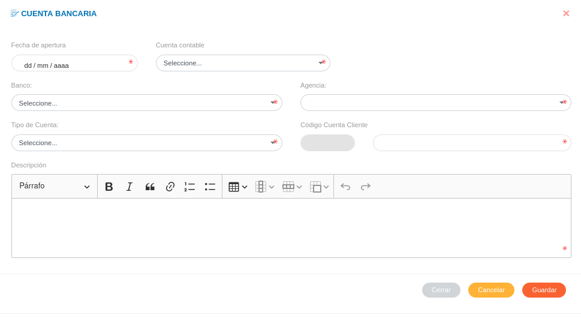
Gestión de registros de Cuentas bancarias
- Para editar un registro de Cuentas bancarias presione el botón Editar del registro seleccionado de la tabla Registros. A continuación complete el formulario Bancos y presione el botón Guardar para almacenar los cambios efectuados.
- Para eliminar un registro de Cuentas bancarias presione el botón Eliminar del registro seleccionado de la tabla Registros.
Formas de pago
A través de esta funcionalidad se gestionan las formas de pago a emplear en los procesos financieros por parte de la organización usuaria.
El usuario selecciona el icono de Formas de pago
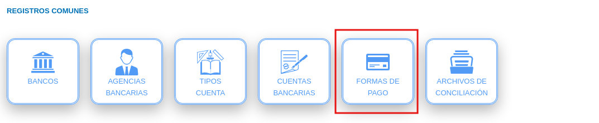
Registro de formas de pago
- Complete el formulario Formas de pago (ver Figura 9). Asigne un nombre y una descripción para la forma de pago a través de los campos Nombre y Descripción.
- Presione el botón Guardar para registrar los cambios efectuados.
- Presione el botón Cancelar para limpiar datos del formulario.
- Presione el botón Cerrar para cerrar el formulario.
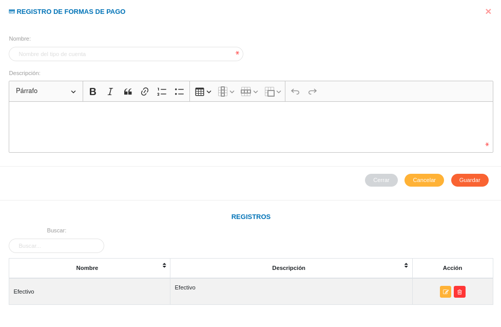
Gestión de registros de formas de pago
- Para editar un registro de Formas de pago presione el botón Editar del registro seleccionado de la tabla Registros. A continuación complete el formulario Bancos y presione el botón Guardar para almacenar los cambios efectuados.
- Para eliminar un registro de Formas de pago presione el botón Eliminar del registro seleccionado de la tabla Registros.
Archivos de conciliación
A través de esta funcionalidad se gestionan los formatos para los archivos de conciliación bancaria a emplear en los procesos financieros por parte de la organización usuaria.
El usuario selecciona el icono de Archivos de conciliación
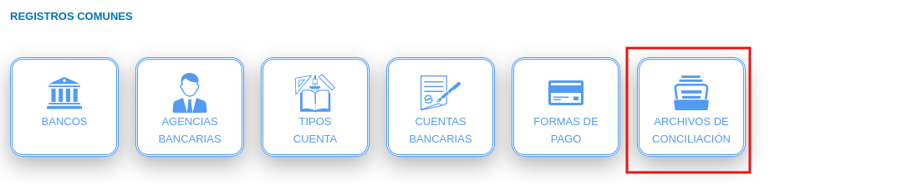
Registro de archivos de conciliación
- Complete el formulario Archivos de conciliación (ver Figura 10).
- Presione el botón Guardar para registrar los cambios efectuados.
- Presione el botón Cancelar para limpiar datos del formulario.
- Presione el botón Cerrar para cerrar el formulario.
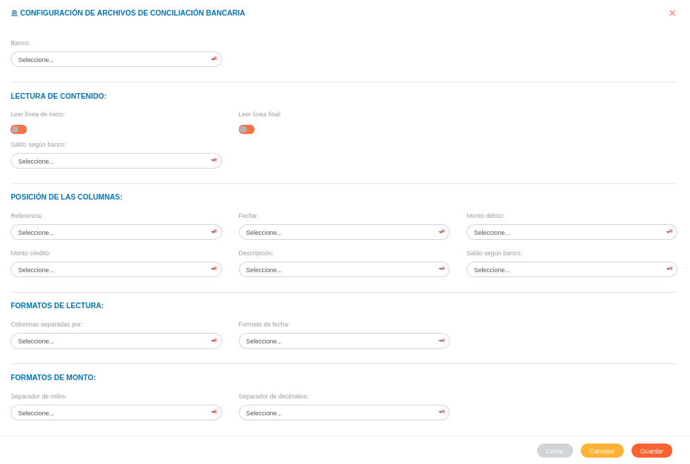
Gestión de registros de archivos de conciliación
- Para editar un registro de Archivos de conciliación presione el botón Editar del registro seleccionado de la tabla Registros. A continuación complete el formulario Bancos y presione el botón Guardar para almacenar los cambios efectuados.
- Para eliminar un registro de Archivos de conciliación presione el botón Eliminar del registro seleccionado de la tabla Registros.